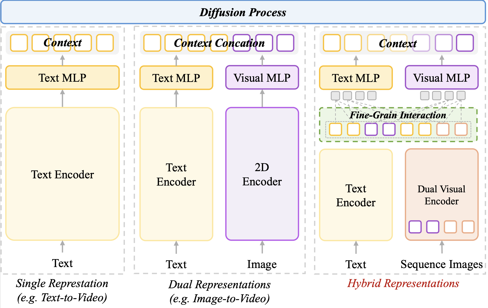

ConsID-Gen:
View-Consistent and Identity-Preserving
Image-to-Video Generation

TL;DR: We propose ConsID-Gen, a view-assisted I2V framework that tackles appearance drift via multi-view geometric priors and unified representation, alongside ConsIDVid, a new benchmark and evaluation suite dedicated to evaluating identity preservation.
Our contribution
- A holistic I2V benchmark for identity preservation, with a diverse dataset and a novel multi-view evaluation suite.
- ConsID-Gen introduces unified representation before diffusion, with multi-view guidance and improved cross-modal alignment.
- Showing that ConsID-Gen outperforms open-source SOTAs in identity consistency and in human evaluation.
